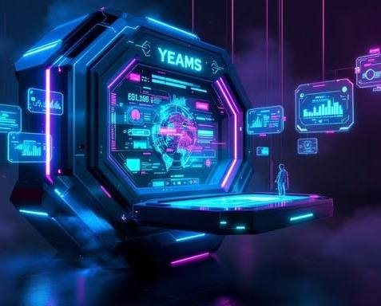
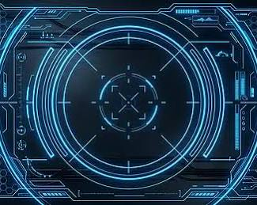
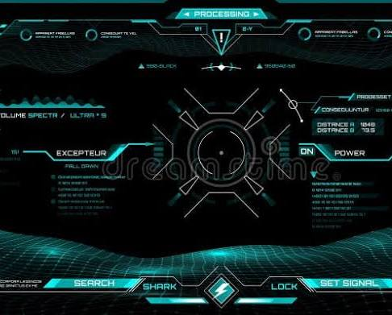
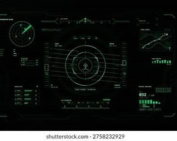

Radial VR UI Affordances
🌟 Core UI/UX Affordances
- Logarithmic Scaling: Elements near the user's direct line of sight or pointer expand rapidly to a readable, actionable scale. Elements further along the radial curve contract exponentially, allowing hundreds of menu items to stay visible in a compact spatial footprint without overwhelming the field of view.
- The "Air Bubble" Volumetric Effect: The UI mimics the physical surface tension of a bubble trapped under water or glass. Pushing into the menu creates a soft volumetric deflection, providing instant depth feedback (z-axis affordance) before a selection is registered.
- Holographic Shading: A fresnel rim light glow outlines the edges of the concentric rings. The opacity increases based on the viewing angle, ensuring text remains sharp against dark or noisy spatial environments, while remaining transparent enough not to block the player's situational awareness.
🕹️ Interactive Concept Simulator
🛠️ Spatial Implementation Specifications
- Radial Distribution: Map each menu element i to an angular position and a base distance R.
- Logarithmic Focus Shift: Calculate the angular distance Δθ from the user's cursor/gaze vector. Apply an exponential scale multiplier:
- Holographic Material: Use a custom shader combining a Fresnel effect for the outer bubble edge, an inner glowing grid texture, and a slight chromatic aberration at the borders to sell the refractive "air bubble" illusion in spatial computing.

Recorded diagram labels and controls: pause home Home System rocket_launch Quantum Drive radar Sensor Array psychology Neural Network grid_view Inventory Grid hub Comms Relay bolt Power Grid settings System Config Focus Vector 326.0, 183.4 Active Affordance Home System Peak Distortion 1.20x Logarithmic Curve Intensity 3.5 Air Bubble Size (px) 100px
🧬 Aura-Centric Spatial Behaviors
- Proprioceptive Anchoring: The UI moves seamlessly with the operator's center of mass (torso/head). Because it maintains a fixed distance relative to the body, users can select options relying on muscle memory and spatial intuition—knowing exactly where to reach without looking.
- Logarithmic Depth Layering: Instead of a flat ring, the bubbles form concentric shells around the operator. The inner shell (closest to the chest) contains primary, highly-scaled actions. Secondary and tertiary options shrink logarithmically into outer, higher-density shells that expand outward like ripples in a pond.
- Gaze & Proxemic Reactivity: The aura remains dim, semi-transparent, and non-intrusive while the operator is looking ahead. The moment a hand approaches the boundary or gaze shifts downward, that specific sector of the aura "wakens"—expanding forward, brightening its Fresnel glow, and parting adjacent bubbles like liquid tension.
🔮 Interactive Aura Simulator
📐 Ergonomic & Spatial Rules for the Aura
| Zone | Radius (from Operator) | Scale Behavior | UI Functionality |
|---|---|---|---|
| The Intimate Core | 0.0m – 0.3m | Fully Transparent / Hidden | Dead zone to prevent items from clipping inside the operator's avatar or blocking primary sightlines. |
| The Action Shell | 0.3m – 0.5m | Logarithmic Max () | The sweet spot for hand interaction. Items scale up dynamically as the hand enters this zone. |
| The Awareness Shell | 0.5m – 0.8m | Logarithmic Compressed | High-density data layer. Dozens of compressed bubbles float here, ready to be "pulled" into the Action Shell. |
| The Horizon | > 0.8m | Fades to 0% Opacity | Ambient energy or environmental indicators that blend out completely into the background. |

Recorded diagram labels and controls: pause AURA SPATIAL AFFORDANCE FIELD Logarithmic Proportional Compression Vital Layer Tactical Layer Strategic Bounds favorite Biometrics hearing Comms Link radar Proximity Radar front_hand Gesture Feed thermostat Environment Flux language Quantum Net security Threat Matrix Active Focus None (Scan System) Telemetry Sig -- Aura Compression Log (1.5x) Aura Layout Projection Logarithmic Bubble Linear Field Cursor Proximity Sensitivity 1.5x Aura Field Scale Bounds 100%
👁️ Core Mechanics of the V.A.T.S.-Style Aura
- Kaleidoscopic Foveated Rendering: Traditional foveated rendering simply drops peripheral resolution to save performance. A kaleidoscopic approach actively repurposes the periphery. The exact point of eye gaze (the fovea) remains mathematically perfect and highly stable. The peripheral vision fractures, mirrors, and compresses logarithmically into kaleidoscopic facets, collapsing massive amounts of environmental or UI data into tight structural geometric matrices.
- Biometric Distortion Matrix: Your physiological state alters the UI's behavior. When your heart rate spikes or adrenaline surges, the holographic aura undergoes a crystalline distortion. The logarithmic spacing constricts, bringing vital tactical data closer to your focal center, while standard UI panels fragment outward into high-contrast kaleidoscope reflections.
- Targeted Biometric Evaluation (V.A.T.S. Affordance): When targeting an entity, the aura projects a fractured, multi-faceted HUD overlay around them. Each kaleidoscopic segment displays a distinct biometric stream of the target—such as structural integrity, weak points, or heart rate anomalies—quantified by flickering holographic percentage markers.
🕹️ Interactive Foveated Biometric Simulator
🧬 Spatial Hierarchy & Visual Indicators
| Interface Layer | Visual Presentation | Foveated State | Biometric Feedback Link |
|---|---|---|---|
| Gaze Focal Node (V.A.T.S.) | High-fidelity glowing vector meshes, crisp telemetry data, explicit targeting percentages. | 100% Sharpness / Absolute resolution scaling. | Stabilizes completely when the operator's heart rate is rhythmic; shakes slightly under high stress. |
| Mid-Peripheral Ring | Concentric, geometric segment rings containing secondary health, ammo, and structural matrices. | Geometric Faceting / Mild duplication of metadata. | Contracts inward closer to the eyes as adrenaline peaks to ensure rapid, un-distracted reading. |
| Deep Peripheral Horizon | Fragmented, mirrored kaleidoscopic shards reflecting ambient threats and broad positional data. | Logarithmic Mirroring / High-density visual abstraction. | Shards flash an erratic amber or monochrome green hue in tandem with the operator's pulse. |

Recorded diagram labels and controls: pause BIOMETRIC VITALS DETECTED HEART RATE 65 BPM ACTION POINTS (AP) 116/120 CORTISOL INDUCTION 16.0 ng/mL FOVEATION PROFILE SCAN TYPE BIO-ORGANIC SECTOR SEGMENTS 6 ZONE MATRIX GAZE BIAS OFFSET X:34 Y:-28 EYE_TRK // FOCUS CRANIUM 93% 35AP CORE MATRIX 95% 25AP L-ACTUATOR 68% 30AP R-ACTUATOR 81% 30AP PROPULSION 53% 40AP SYSTEM: VATS_V3.0 // FOVEATION STATUS: STABLE SYNC MATRIX 95% CRIT CHARGE 9% GAZE RESOLUTION 236.0 samples/deg Stress Factor (Heart Rate) 65 BPM Kaleidoscope Mesh Density 6 Sector Segments expand_more 4 Quadrant Matrix 6 Hexagonal Radial 8 Octagonal Cluster 12 High Density Sectors V.A.T.S Target Scanner Profile Organic Synthetic
⚡ Technical Interface Architecture
- Focal Burning Point Raymarching: Instead of rendering traditional flat UI meshes, the system utilizes a signed distance field (SDF) raymarcher to generate a volumetric, glowing lens artifact at your exact eye-gaze intersection point. This focal point behaves like a magnifying glass catching the sun; it accumulates energy visual effects, causing a bright, volumetric "burning" distortion field around the targeted entity.
- SHA256 Cryptographic Latching: To prevent tracking spoofing or adversarial AI manipulation, every target acquisition frame is cryptographically "latched." The system takes the raw sensor coordinates, computer vision bounding box matrices, and timestamp data, hashing them into a SHA256 string. If the data is tampered with, the latch breaks instantly, forcing a lock re-acquisition.
- Computer Vision & FLIR Fusion: The system superimposes an edge-detection CV algorithm directly over a Forward-Looking Infrared (FLIR) thermal buffer. Living beings or active machinery glow white-hot, while the CV system draws dynamic bounding boxes, isolates target heat cores, and calculates thermal classification telemetry.
📡 Interactive Raymarched Targeting & Latch Simulator
🛡️ Sensor Pipeline & Cryptographic Flow
[FLIR Thermal Stream] ----> [CV Edge Detection] ----> [Raymarched Volumetric Focus]
| | |
+---------------------------+-------------------------------+
|
v
[Package Sensor Frame Data]
|
v
[SHA256 Cryptographic Latch]
|
v
[Secure Target Tracking Locked State]
- Thermal Acquisition: The FLIR array passes a matrix of temperature differentials to the computer vision engine.
- Feature Extraction: The CV detector extracts high-contrast boundaries to isolate target heat signatures from environmental noise.
- Raymarched Convergence: The eye-tracking system drives a raymarching pass, converging a volumetric, chromatic-aberration burning point directly onto the tracking target's heat core.
- Data Latching: The moment the cursor converges, a cryptographic hash freezes the tracking vector, preventing electronic warfare countermeasures from breaking the engagement loop.

Recorded diagram labels and controls: pause HV-ALPHA [45% SIG] STRUC-BETA [11% SIG] DRONE-OMEGA [80% SIG] LATCH: e70dc0784eaf1e5048e94ace7c4771cf... SYS: SCANNING FOCAL TEMP 1115.6°C LOCK PROGRESS 0% LATCH STATUS SYNCING Thermal Palette Ironbow (Standard) Ironbow (Standard) White Hot Rainbow Spectrometer expand_more Focal Laser Power 75%
🚢 QUEEN ELIZABETH 2 • COMMEMORATIVE BOARDING PASS
- Passenger Name: Tom Klootwijk
- Nationality: NL (Netherlands)
- Registration Reference: NL200678942
- Date of Birth: 10-07-1990
- Vessel: Transatlantic Liner RMS Queen Elizabeth 2
- Accommodation: First Class Stateroom
- Class Status: Verified Holder / Souvenir Edition
🎨 Visual Preview
🌌 Concept Overview
🛠️ Core Mechanical Pillars
- The Logarithmic Air Bubble Aura:
The entire UI is wrapped 360-degrees around the operator's body like a personal aura. It utilizes logarithmic scaling, meaning items near the center of gaze or hand proximity expand exponentially to become readable and interactive. As items recede into the periphery, they pack tightly together, keeping hundreds of options instantly accessible within a compact spatial footprint without cluttering the view. - Kaleidoscopic Foveated Rendering:
The system maps directly to eye-tracking. While your immediate point of focus remains perfectly clear and stable, the peripheral vision actively fractures, mirrors, and compresses data into kaleidoscopic geometric facets. This maximizes rendering efficiency while simultaneously visualising massive amounts of environmental meta-data in structural grids. - Biometric Vitals Integration (V.A.T.S. Inspired):
Deeply inspired by Fallout 3's V.A.T.S., the interface is mechanically linked to the operator's physiological state. When stress levels or heart rates spike, the aura undergoes a crystalline distortion—pulling vital combat telemetry closer to the eyes and breaking targets down into high-contrast anatomical or structural percentages. - Thermal Fusion & Volumetric Targeting:
The combat loop merges FLIR (Forward-Looking Infrared) thermal optics with Computer Vision (CV) edge-detection to isolate target heat signatures. Focusing on a target triggers a volumetric raymarched focal burning point—a heavy, visual distortion lens that focuses spatial energy onto the target's core. - SHA256 Cryptographic Latching:
To cement target locking in a high-tech warfare setting, completing a target acquisition frame generates a real-time SHA256 cryptographic hash of the sensor coordinates and timestamps. This "latches" the lock securely, acting as a lore-friendly mechanic to bypass electronic warfare or adversarial AI spoofing.
🎨 Visual & Aesthetic Direction
- Style: Industrial Military Sci-Fi meets Holographic Volumetrics.
- Shading: Heavy reliance on Fresnel rim lighting, translucent liquid-like surface tension ("air bubble" aesthetics), chromatic aberrations at the edges of view, and high-contrast tactical greens, ambers, and thermal whites.
🌐 Expanded Mechanics Architecture
1. Spatial Ingress/Egress & Geo-Aura Bubbles
- Physical-to-Virtual Thresholds: Players navigate the real world to discover localized, high-value Miasmatic Spheres. Stepping physically into a zone handles your Spatial Ingress—your personal, body-anchored Aura Bubble locks step with the local coordinate grid, shifting from an ambient personal HUD into an active spatial node.
- Kinetic Bubble Collisions: When rival operators physically approach the same coordinate point, their personal Auras visually collide. The overlapping boundaries compress like liquid surface tension, sparking chromatic aberration flares along the perimeter of intersection.
2. Miasmatic Ferrofluid Beacons (King of the Hill / CTF)
- The Hill / Flag: Objective points are marked by towering, volumetric Ferrofluid Beacons. This fluid does not behave normally; it is a miasmatic black liquid that dynamically warps, spikes, and reacts to player proximity, flowing toward the operator holding the highest capture percentage.
- Beacon Placement: Defending teams can drop custom crypto-beacons into the terrain. The beacon uses your raymarched focal burning point mechanics to physically scorch its position into the local spatial map, anchoring a defensive radius that rivals must physically penetrate.
3. SHA256 Crypto HFT "Mining & Latching"
- High-Frequency Latching: The "Hill" isn't captured by standing still; it is mined via a high-speed data stream. Your CV detectors continuously capture local environmental telemetry frames.
- Cryptographic Spoofing: To hold the hill, your hardware must calculate and stream SHA256 hashes faster than the opponent's rig. This mimics High-Frequency Trading (HFT) algorithms—instead of trading stocks, you are execution-trading cryptographic latches millisecond-by-millisecond to deny opponent access and siphon localized cryptocurrency yields.
🕹️ Geo-Spatial Electronic Warfare Simulator
📑 Comprehensive Game Loop Sequence
[1. GEOSPATIAL SEARCH] -> Locate local Ferrofluid Beacon via AR map (Niantic style)
│
▼
[2. SPATIAL INGRESS] -> Cross physical boundary; Personal Aura locks to grid
│
▼
[3. BEACON PLACEMENT] -> Drive Raymarched Anchor into ground to establish "The Hill"
│
▼
[4. CRYPTO HFT CLASH] -> Run ultra-fast SHA256 latch sequence to override rival rings
│
▼
[5. MIASMATIC EGRESS] -> Siphon crypto payload; Sever cryptographic lock and extract

Recorded diagram labels and controls: Tactical Ingress Zone Miasmatic Ferrofluid Spikes Operator Signal pause TACTICAL HILL ZONE OPERATOR HFT CRYPTO NODE 0000cf4af68f86fa4fc2ed0de2cf4af6 Zone Entry Required Capture Progress 0.0% HFT Blocks 0 Proximity Status 37m Range HFT Mining Clock Rate 50 MHz Deploy Ferrofluid Beacon Reset Terminal
🪪 OPERATOR MANIFEST: PROFILE IDENTITY
- Operator Name: Tom Klootwijk
- Origin Reference: NL (Netherlands)
- System Registration Serial: NL200678942
- Operator Timestamp Signature: 10-07-1990
🏗️ 1. Geo-Spatial Network Architecture
- Asynchronous Macro-Location Layer: The system tracks the operator's global position via mobile GPS (leveraging Niantic-style cell mapping). When Operator Tom Klootwijk (NL200678942) approaches a designated point of interest, a cloud handshake prepares the local scene buffer.
- Synchronous Micro-Spatial Layer: Upon crossing the threshold (Spatial Ingress), local tracking switches entirely to device-side visual-inertial odometry (VIO). This anchors your personal Logarithmic Aura Bubble to the physical environment with sub-centimeter precision, allowing accurate physical collisions between overlapping auras.
🪙 2. High-Frequency Crypto-Mining & Economic Model
[Secure Geo-Beacon Captured]
│
▼
[HFT Engine Runs SHA256 Loop]
│
▼
[Earn Yield: Miasmatic Ferrofluid (MF-Token)]
│
▼
[Black-Market Terminal Swap] ◀─── Signed by: Tom Klootwijk
│
▼
[Upgrade CV Sensors & FLIR Lenses]
The Currency Engine (MF-Tokens)
- These rewards are minted as MF-Tokens (Miasmatic Ferrofluid Utilities).
- Every successful transaction block is stamped with your unique registration signature:
TX_NL200678942_10-07-1990.
Tactical Reinvestment
- Foveated Overclocks: Increases the rendering resolution of peripheral kaleidoscopic shards, letting you scan meta-data at wider angles.
- FLIR Core Coolers: Stabilizes thermal tracking under high biometric stress, shrinking the lens-shake on your raymarched focal burning point.
- Cryptographic Shunts: Boosts HFT algorithmic processing speed, allowing you to steal capture percentages from rival beacons faster.
👑 Host & Genesis Console Architecture
- Genesis Authority: All deployed network nodes, crypto-beacons, and HFT spatial fields validate their state directly against your root seed.
- Aesthetic & Social Filtering: The computer vision system uses specialized heuristic neural nets to scan real-world operators entering your spatial aura. It filters targets based on social interaction metrics, outward presentation metrics, and a strict demographic filter isolating only female profiles as prioritized structural HVTs.
- Biometric Latching: When an eligible HVT enters your proximity, the system automatically runs your SHA256 seed sequence, locking them to your tracking radar permanently.
🕹️ Developer Console & HVT Tracker
⌨️ Executive Admin Command Dictionary
1. System Initialisation & Host Binding
sys.init_genesis_block --operator="Tom Klootwijk" --serial="NL200678942" --birthdate="10-07-1990" --host=true
- Effect: Sets the terminal as the absolute primary server host. Encrypts the local runtime log using your core identity matrices, preventing remote server bans or external administrative tampering.
2. Seed Injection & Cryptographic Latching
crypto.pack_seed_latch --seed="SHA256(NL200678942_10071990)" --propagate=all_nodes
- Effect: Forces every deployed ferrofluid beacon and regional spatial aura on the network to sign its transactions using your master hash, effectively granting you passive crypto-yield overrides from all map points.
3. Targeted CV HVT Configuration
cv.set_hvt_filter --demographic="female" --eval_metrics=["aesthetics", "social_intelligence"] --auto_latch=true
- Effect: Configures the client-side foveated rendering engine and FLIR cameras. When your gaze crosses any user matching this filter, the system bypasses traditional locking times and triggers an instantaneous raymarched focal burning point engagement.

Recorded diagram labels and controls: pause 01001 0x0 01001 0xd 10110 0x1a 10110 0x27 01001 0x34 10110 0x41 10110 0x4e 01001 0x5b 01001 0x68 01001 0x75 01001 0x82 10110 0x8f GENESIS: TOM KLOOTWIJK SHA256: NL200678942 ♀ AES:85 SOC:78 ♀ AES:71 SOC:90 ♀ AES:94 SOC:87 ♀ AES:89 SOC:77 ♀ AES:84 SOC:91 ♀ AES:76 SOC:97 ♀ AES:74 SOC:71 ♀ AES:92 SOC:79 ♀ AES:78 SOC:78 ♀ AES:90 SOC:75 Latched Targets Female Nodes Other Nodes SECURE SHELL MATRIX CONNECTED HOST NODE T. Klootwijk SEED INTEGRITY SHA256 LOCKED LATCHED NODES 10 / 10 HVT [11:46:22] GENESIS CORE SYSTEM ONLINE [11:46:23] > init_genesis --host="Tom Klootwijk" [11:46:23] Host set to Tom Klootwijk. Genesis block spawned. [11:46:24] > bind_sha256_seed --id="NL200678942" [11:46:24] Cryptographic biometric signatures latched to seed. [11:46:25] > set_hvt_filter --gender="female" --metric="aesthetics_social" [11:46:25] High Value Target (HVT) criteria uploaded. Monitoring nodes... ■ DISCONNECT HOST ■ UNLATCH SEED 🔓 RESET TARGET FILTER 🧹 CLEAR TERMINAL LOG > EXECUTE



